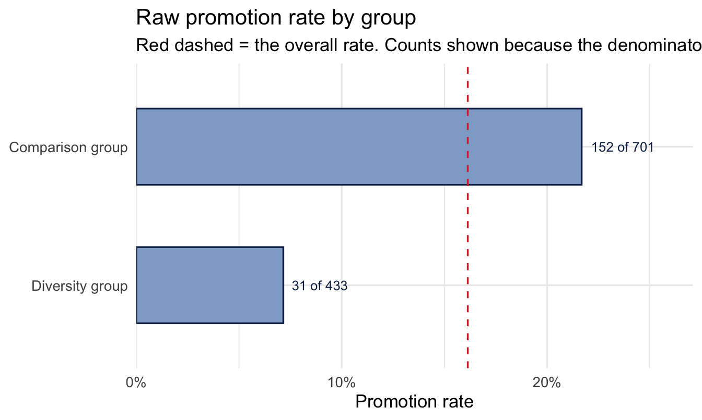
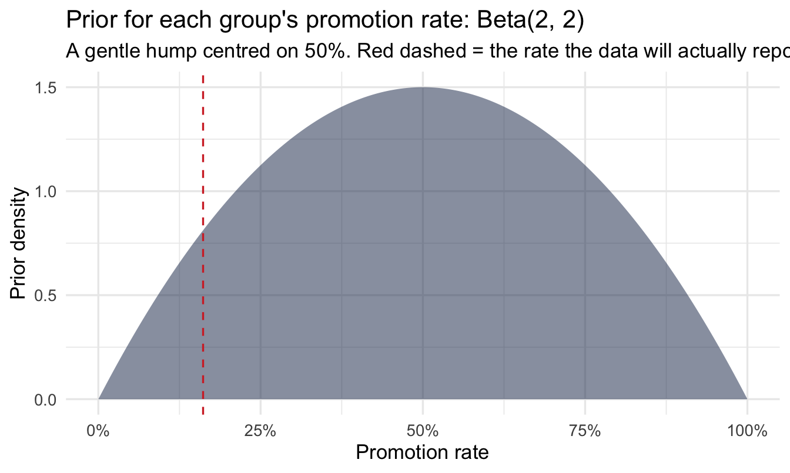
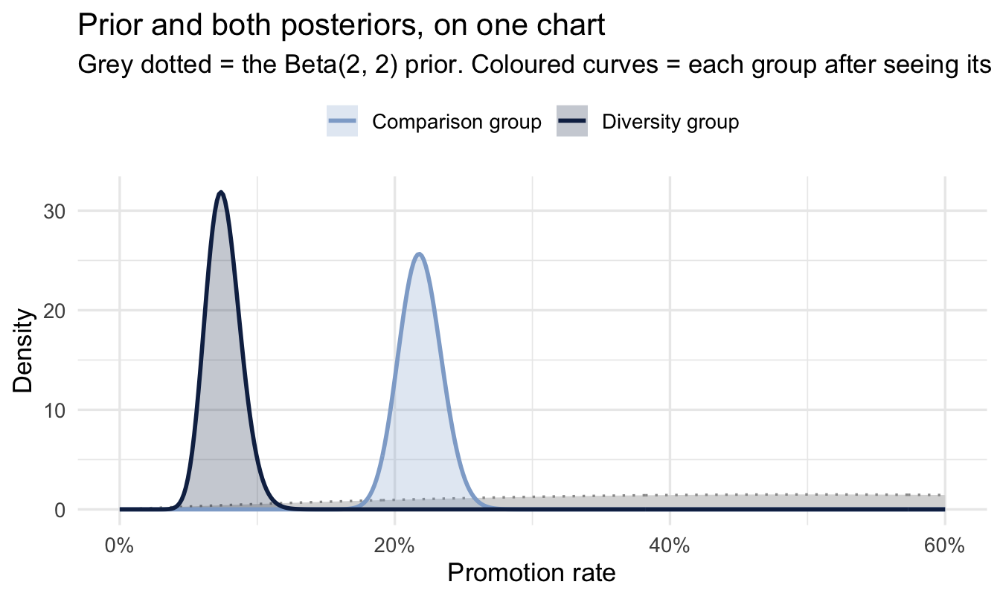
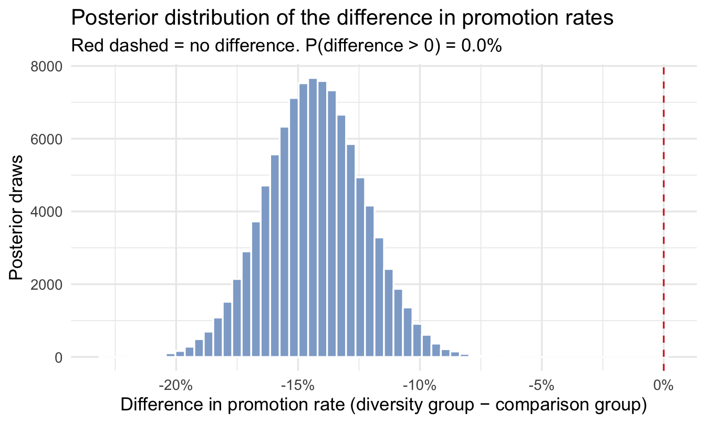
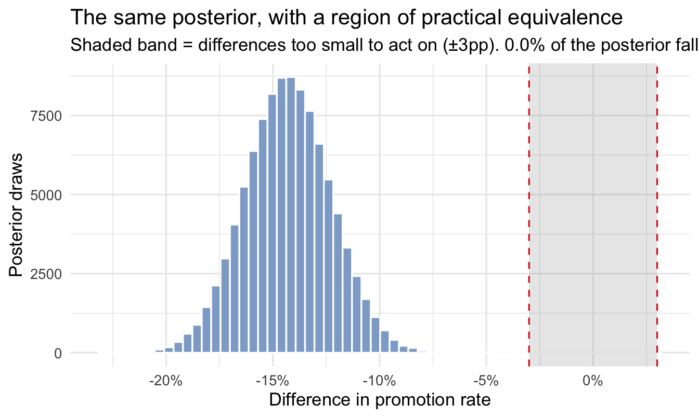

library(tidyverse)
library(peopleanalyticsdata)
theme_set(theme_minimal(base_size = 13))
set.seed(2026)
# Shared colour tokens (matching theme/academicdesign*.scss). Navy and light
# navy carry the data; red is reserved for reference lines and annotations,
# never for a second data series.
navy <- "#122a52"
navy_light <- "#8fabd0"
red <- "#d32f2f"
data("promotion", package = "peopleanalyticsdata")
# Guard against missing values before grouping and modelling (Chapter 1
# found gaps in a similar teaching dataset).
promotion <- promotion |> drop_na(diverse, flexible, store, promoted)20 Bayesian A/B Testing for People Experiments
Welcome back
People Analytics runs experiments constantly, even when nobody calls them that: did the new interview process change the hire rate, did the flexible-work pilot change retention, does one group’s promotion rate genuinely differ from another’s. Unlike a web A/B test with millions of visitors overnight, these experiments usually have dozens or hundreds of people in each group, and the answer is needed for a decision, not a p-value.
This chapter builds a Bayesian A/B test from the same Beta-Binomial machinery you met in Chapter 4, and shows why its output — “there’s an 87% chance A beats B, and if it does, it’s probably by 2–9 points” — is usually a better fit for a People Analytics decision than a significance test.
What you’ll be able to do by the end
- Set up a Bayesian A/B test for two groups’ rates using Beta posteriors
- Compute P(A beats B) directly from posterior samples
- Report the size of a likely difference, not just its direction
- Compare this to a classical proportions test and to Bayes-Factor hypothesis testing, and know when each is the better tool
- Apply appropriate care when the “test” involves a protected characteristic
20.1 Setup
promotion has 1,134 employee records from a retail company: diverse (membership of a diversity group at the company), flexible (worked part-time for 6+ months), store (joined working in retail stores), and promoted (the outcome).
20.2 The question
Promotion-rate comparisons between groups are one of the most common — and most consequential — comparisons a People Analytics team is asked to make, often as part of routine equity monitoring. We’ll use it as our worked example:
# `diverse` may be coded as Y/N or 1/0 depending on data version — normalise
# to an explicit, readable label so every downstream step is unambiguous.
promotion <- promotion |>
mutate(diverse_grp = if_else(diverse %in% c("Y", "1", 1, TRUE),
"diverse_group", "comparison_group"))
group_rates <- promotion |>
group_by(diverse_grp) |>
summarise(
n = n(),
promoted_n = sum(promoted == 1 | promoted == "Y", na.rm = TRUE),
raw_rate = promoted_n / n
) |>
mutate(label = if_else(diverse_grp == "diverse_group",
1 "Diversity group", "Comparison group"))
group_rates- 1
-
A presentation-ready label alongside the raw coding. Legends and axis labels in this book never show a raw variable value —
diverse_grpis for the code,labelis for the reader.
# A tibble: 2 × 5
diverse_grp n promoted_n raw_rate label
<chr> <int> <int> <dbl> <chr>
1 comparison_group 701 152 0.217 Comparison group
2 diverse_group 433 31 0.0716 Diversity group Describe it, then plot it — Chapter 10’s step 2, and worth doing even when the data is only four numbers, because the plot is where the sample sizes become visible:
ggplot(group_rates, aes(x = raw_rate, y = fct_rev(label))) +
geom_col(fill = navy_light, colour = navy, width = 0.55) +
geom_vline(xintercept = weighted.mean(group_rates$raw_rate, group_rates$n),
linetype = "dashed", colour = red) +
geom_text(aes(label = paste0(promoted_n, " of ", n)),
1 hjust = -0.15, size = 3.4, colour = navy) +
scale_x_continuous(labels = scales::percent,
expand = expansion(mult = c(0, 0.25))) +
labs(
title = "Raw promotion rate by group",
subtitle = "Red dashed = the overall rate. Counts shown because the denominators do the arguing.",
x = "Promotion rate", y = NULL
)- 1
- The counts on the bars deliberately. Two rates of 8% and 12% mean something completely different at n = 40 than at n = 400, and a bar chart of rates alone hides which situation you’re in — the single most common way a rate comparison misleads a stakeholder.

ImportantThis example is not a randomised experiment, and the distinction matters
Everything below is a valid Bayesian comparison of two rates. It is not an A/B test, because nobody assigned anyone to a group: membership of a diversity group is a characteristic people arrived with, not a treatment that was applied. Every confounder Chapter 21 is about — differences in role, tenure, function, manager — is still fully in play, and the Beta-Binomial machinery does nothing whatever about them.
The reason to use it as the worked example anyway is that the arithmetic of comparing two rates is identical either way, and this is the version a People Analytics team is asked for far more often than a true experiment. The reason to say so out loud is that the method’s output — “an 87% chance one rate is higher” — sounds equally authoritative in both cases, and only one of them licenses a causal reading.
When you do have random assignment (a training pilot with a randomised control group, a randomised change to an interview process), the same code below gives you a genuine causal answer. When you don’t, it gives you an accurate description of a difference whose cause is still open.
ImportantHandle this kind of comparison with care
A raw or modelled promotion-rate gap between groups is a starting signal, not a conclusion. Real equity analysis needs to account for role, tenure, performance, and other legitimate factors before drawing any conclusion about a specific group difference, and — exactly as in Chapter 16 — usually belongs alongside legal and compensation expertise, sometimes under legal privilege, before it goes anywhere near a decision. Everything below is the statistical method, not a complete equity analysis on its own.
20.3 The Bayesian A/B test
20.3.1 One posterior per group
Exactly as in Chapter 4, each group’s promotion rate gets a Beta posterior: start from a weakly-informative Beta(2, 2) prior (centred on 50%, easy to move), and update with each group’s promotions and non-promotions. Same habit as always — look at the prior before combining it with any data:
tibble(theta = seq(0, 1, length.out = 400)) |>
mutate(density = dbeta(theta, 2, 2)) |>
ggplot(aes(theta, density)) +
geom_area(fill = navy, alpha = 0.5) +
geom_vline(xintercept = weighted.mean(group_rates$raw_rate, group_rates$n),
linetype = "dashed", colour = red) +
scale_x_continuous(labels = scales::percent) +
labs(title = "Prior for each group's promotion rate: Beta(2, 2)",
subtitle = "A gentle hump centred on 50%. Red dashed = the rate the data will actually report.",
x = "Promotion rate", y = "Prior density")
NoteA prior centred a long way from the answer
That red line is a long way from the middle of the prior, and it’s worth being explicit about why that’s fine here and when it wouldn’t be.
Beta(2, 2) is worth about two prior observations per group — a single notional promoted and a single notional not-promoted, plus the uniform baseline. Against denominators in the hundreds, it is overwhelmed immediately and the posterior sits essentially where the data puts it. If you knew the organisation’s overall promotion rate runs around 10%, a prior like Beta(2, 18) would encode that honestly and cost nothing — and with 30 people per group instead of 500, it would change the answer materially. Chapter 14 is the version of this argument where the prior is estimated from your own data rather than picked.
The habit worth keeping: look at where your prior sits relative to the answer before you combine them, so that if the two disagree you find out now rather than in the meeting.
prior_a <- 2; prior_b <- 2
posteriors <- group_rates |>
mutate(
post_alpha = prior_a + promoted_n,
post_beta = prior_b + (n - promoted_n)
)
posteriors# A tibble: 2 × 7
diverse_grp n promoted_n raw_rate label post_alpha post_beta
<chr> <int> <int> <dbl> <chr> <dbl> <dbl>
1 comparison_group 701 152 0.217 Comparison gr… 154 551
2 diverse_group 433 31 0.0716 Diversity gro… 33 404theta_grid <- seq(0, 0.6, length.out = 400)
curves <- posteriors |>
reframe(
theta = theta_grid,
density = dbeta(theta_grid, post_alpha, post_beta),
.by = label
)
1prior_curve <- tibble(
theta = theta_grid,
density = dbeta(theta_grid, prior_a, prior_b)
)
ggplot(curves, aes(x = theta, y = density)) +
geom_area(data = prior_curve, fill = "grey85", colour = "grey60",
linetype = "dotted") +
geom_area(aes(fill = label), alpha = 0.25, position = "identity") +
geom_line(aes(colour = label), linewidth = 1) +
scale_colour_manual(values = c("Comparison group" = navy_light,
"Diversity group" = navy)) +
scale_fill_manual(values = c("Comparison group" = navy_light,
"Diversity group" = navy)) +
scale_x_continuous(labels = scales::percent) +
labs(
title = "Prior and both posteriors, on one chart",
subtitle = "Grey dotted = the Beta(2, 2) prior. Coloured curves = each group after seeing its data.",
x = "Promotion rate", y = "Density", colour = NULL, fill = NULL
) +
theme(legend.position = "top")- 1
- The prior drawn on the same axes as the posteriors, deliberately — Chapter 5’s habit, and the clearest single picture of what Bayesian updating actually did here. The flat grey hump is what we believed beforehand; the two narrow spikes are what 1,100 records did to it.

The gap between the grey and the coloured curves is the whole point of the exercise: almost all of the information in those posteriors came from the data, which is exactly what you want a weakly-informative prior to produce. The gap between the two coloured curves is the finding, and how much they overlap is the honest answer to “is this real.”
20.3.2 The question a p-value doesn’t answer directly: P(A beats B)
This is Chapter 5’s technique — subtract the draws — applied to two Beta posteriors instead of two Normal ones. Draw many samples from each posterior, subtract them element by element, and count how often the difference lands above zero. Simple, and exactly what most stakeholders actually want to know:
n_draws <- 100000
samples <- posteriors |>
reframe(
draw = 1:n_draws,
sample = rbeta(n_draws, post_alpha, post_beta),
.by = diverse_grp
) |>
pivot_wider(names_from = diverse_grp, values_from = sample, id_cols = draw)
samples <- samples |>
mutate(diff = diverse_group - comparison_group)
p_higher <- mean(samples$diff > 0)
p_higher[1] 0ggplot(samples, aes(x = diff)) +
geom_histogram(bins = 60, fill = navy_light, colour = "white") +
geom_vline(xintercept = 0, linetype = "dashed", colour = red) +
scale_x_continuous(labels = scales::percent) +
labs(
title = "Posterior distribution of the difference in promotion rates",
subtitle = paste0("Red dashed = no difference. P(difference > 0) = ",
scales::percent(p_higher, accuracy = 0.1)),
x = "Difference in promotion rate (diversity group − comparison group)",
y = "Posterior draws"
)
diff_ci <- quantile(samples$diff, c(0.025, 0.5, 0.975))
diff_ci 2.5% 50% 97.5%
-0.1821827 -0.1430129 -0.1033531 Those three numbers are the finding, so here they are in the form you’d actually say them — the difference in percentage points, which is the unit a stakeholder thinks in:
The diversity group’s promotion rate is -14.3% different from the comparison group’s, with a 95% credible interval running from -18.2% to -10.3%. The probability the diversity group’s underlying rate is genuinely higher is 0.0%.
Read the interval before the probability. If it straddles zero, the probability statement is telling you which side of the fence the bulk of the posterior sits on — not that a difference has been established.
NoteTwo workflow steps that legitimately don’t apply here
Chapter 10’s nine steps include diagnosing the sampler (step 6) and a posterior predictive check (step 7), and this chapter does neither. That’s correct, and worth being explicit about so it doesn’t read as a shortcut.
There is no sampler to diagnose. A Beta prior updated by binomial data gives a Beta posterior exactly — that’s what “conjugate” means. rbeta() above is drawing from a distribution we already know in closed form, not exploring an unknown posterior by MCMC. There is no Rhat, because there are no chains that could fail to agree.
The posterior predictive check is nearly trivial. With two groups, two counts and two denominators, the model has as many parameters as it has data points to reproduce. It will match the observed promotion counts essentially by construction, so a check that it does tells you nothing.
The general lesson, which arrives properly in Chapter 21: the workflow is a checklist, not a ritual. Skipping a step because it cannot inform you is different from skipping it because you didn’t get round to it — and the difference is that you can say which one you did.
ImportantReporting this properly
Report three things together, not a single number: the probability the groups genuinely differ (0.0% here), the likely size of the difference (the credible interval), and whether that size is big enough to matter for a real decision. A 99%-confident but tiny difference and an 80%-confident but large one often call for different actions — collapsing both into “significant / not significant” throws that distinction away.
20.4 Is the difference big enough to act on?
A region of practical equivalence (ROPE) makes this explicit: pick the smallest difference in promotion rate you’d actually consider meaningful (say, 3 percentage points), and ask how much of the posterior falls outside it.
rope_width <- 0.03
rope_result <- samples |>
summarise(
p_practically_higher = mean(diff > rope_width),
p_practically_lower = mean(diff < -rope_width),
p_practically_equivalent = mean(abs(diff) <= rope_width)
)
rope_result# A tibble: 1 × 3
p_practically_higher p_practically_lower p_practically_equivalent
<dbl> <dbl> <dbl>
1 0 1 0Code
ggplot(samples, aes(x = diff)) +
geom_histogram(bins = 60, fill = navy_light, colour = "white") +
annotate("rect", xmin = -rope_width, xmax = rope_width,
1 ymin = -Inf, ymax = Inf, fill = "grey50", alpha = 0.18) +
geom_vline(xintercept = c(-rope_width, rope_width),
linetype = "dashed", colour = red) +
scale_x_continuous(labels = scales::percent) +
labs(
title = "The same posterior, with a region of practical equivalence",
subtitle = paste0(
"Shaded band = differences too small to act on (±3pp). ",
scales::percent(rope_result$p_practically_equivalent, accuracy = 0.1),
" of the posterior falls inside it."),
x = "Difference in promotion rate", y = "Posterior draws"
)- 1
- The ROPE drawn as a band rather than described in a table. This is the chart to show a stakeholder, because it converts “is there a difference” into “is the difference in the zone we said we’d care about” — a question they set the terms of, not you.

Read the three numbers as a set that has to add to one. The two outer columns are the probability the difference is big enough to matter in each direction; the middle column is the probability it is real but too small to act on, or absent altogether.
0% of the posterior falls inside ±3 percentage points — the range we agreed in advance was too small to change anything. The probability the gap is larger than that in either direction is 100%.
This reframes “is there a difference” as “is there a difference big enough to be worth acting on” — usually the actual question behind the request. The critical procedural point: pick the ROPE width before you see the posterior. Choosing it afterwards, once you know where the distribution sits, is p-hacking with different vocabulary.
20.5 How this compares to other approaches
NoteA different lens: the classical two-proportion test
prop.test() or a chi-square test asks: if the two groups truly had the same promotion rate, how unusual would data this different be? — producing a p-value. The Bayesian version above asks the question most stakeholders actually mean when they say “is this real”: given the data we’ve seen, how likely is it that the rates genuinely differ, and by how much? With the sample sizes typical of People Analytics work, the two methods usually agree on direction; the Bayesian version’s edge is answering the second, size-and-confidence question directly, in one step, without a separate power calculation.
prop.test(x = group_rates$promoted_n, n = group_rates$n)
2-sample test for equality of proportions with continuity correction
data: group_rates$promoted_n out of group_rates$n
X-squared = 40.655, df = 1, p-value = 1.816e-10
alternative hypothesis: two.sided
95 percent confidence interval:
0.1043809 0.1860983
sample estimates:
prop 1 prop 2
0.21683310 0.07159353 Worth reading against the Bayesian output above, line by line, because the two are closer than the philosophical argument suggests:
p-value— the probability of seeing a gap at least this large if the two rates were truly identical. Note the direction of that sentence. It is not the probability that the rates are the same, and it is not the probability the gap is real, which is what 0.0% above actually gives you.95 percent confidence interval— compare it directly to the credible interval fromquantile(samples$diff, ...). With hundreds of observations per group and a weak prior, the two will land in nearly the same place, which is the honest version of “these methods usually agree.” What differs is what you’re allowed to say about the interval: the credible interval is a statement about where the difference probably is, the confidence interval is a statement about the procedure that produced it.sample estimates— the two raw rates, unchanged fromgroup_rates. No shrinkage, no prior, no pooling.
The one thing prop.test() does not give you at all is the ROPE question. There is no way to ask it “how likely is the gap bigger than three percentage points,” because it only ever tests against exactly zero.
NoteWhy this book uses estimation, not Bayes Factors, for this kind of test
Keith McNulty’s book covers Bayesian hypothesis testing using Bayes Factors — comparing the evidence for “the rates are equal” against “the rates differ” as a ratio, the Bayesian analogue of a p-value-producing test. It’s a legitimate and well-developed approach, useful in particular when the actual question is “is there truly a non-zero effect at all?” — common in scientific replication contexts, and covered in his Chapter 12. This book leans instead on the estimation approach above (posteriors, credible intervals, and a ROPE), because the questions People Analytics usually needs answered are “how big” and “are we confident enough to act,” not “is the effect exactly zero” — and estimation answers those directly, in the same units as the decision. Bayes Factors can also be sensitive to exactly how you specify the alternative hypothesis, which adds a layer of judgment estimation avoids. Neither is “the correct Bayesian method” — pick the one that matches the actual question.
TipFor the ML/DS crowd
If you’ve heard of Thompson sampling or multi-armed bandits — used in live experimentation platforms and recommender systems to decide which variant to show next — you’ve seen this exact method running continuously. Thompson sampling literally draws one sample from each arm’s Beta posterior and picks whichever arm’s sample is highest, repeating as data arrives; it’s the sequential, automated sibling of the one-shot comparison in this chapter. The maths is identical — sampling from Beta posteriors and comparing — just wired into a live decision loop instead of a one-time analysis.
CautionTry it yourself
Rerun this comparison for flexible vs. not, and separately for store vs. not. Do either of those produce a clearer signal than diverse did? Report your answer the way you would to a stakeholder — probability of a real difference, likely size, and whether it clears your ROPE.
On the job
ImportantWhy this matters day to day
Most People Analytics “did X work” questions are exactly this shape — two groups, a rate, and a decision to make with a modest sample. This method scales down gracefully to small groups (unlike a chi-square test, which gets unreliable with few observations per cell), gives you a direct, presentable probability statement, and — via the ROPE — keeps you honest about the difference between “statistically distinguishable” and “big enough to matter.”
Summary
NoteToday you learned
- A Bayesian A/B test puts a Beta posterior on each group’s rate and compares them directly by sampling, rather than via a significance test.
- P(A beats B) and the credible interval on the difference together answer “is it real” and “how big,” in one step.
- A ROPE turns “is there a difference” into the more useful “is the difference big enough to act on.”
- This book favours estimation over Bayes-Factor hypothesis testing for exactly this kind of question — see the note above for when you’d reach for the other approach instead.
- Comparisons involving protected characteristics need the same care as the pay analysis in Chapter 16 — a statistical signal, not a complete equity conclusion on its own.
- The arithmetic is the same whether or not anyone was randomised, and the licence to interpret it isn’t. With random assignment this is a causal answer; without it — as in this chapter’s worked example — it is an accurate description of a difference whose cause is still open, and Chapters 21 and 22 are what you reach for next.
- Set the ROPE width before you look at the posterior. Choosing it afterwards is p-hacking in different clothes.
Next chapter
Causal structure: drawing the graph — an A/B test is the easy case, because you controlled who went into which group. The next two chapters are about the far more common situation where you didn’t, and what can still be said.